Visual Empire
The Sovereign Icon
The Question of Sovereignty
Just when the nation-state appeared to be waning in significance, national sovereignty is back in the spotlight. The issue takes on special urgency in the United States, where sovereign right has been proclaimed persistently by the president in an attempt to justify policies of military aggression and violations of international and domestic law, executing these policies with disregard for traditional judicial and constitutional procedures.1 Giorgio Agambenʼs recently translated book State of Exception has touched off a small case of collective hysteria among American academics by claiming that by their intrinsic nature, democracies undermine themselves, that dictatorship is an ontological necessity of modern politics, and that the sovere34ignʼs power to declare a state of emergency and with it a state exception to the law places potentially the whole world under the sign of the concentration camp.
Agambenʼs revelation, however, is not the scandal. It is a logical truism that something cannot be a member of its own set, that constituting power (pouvoir constituens) cannot be synonymous with constituted power (pouvoir constituent).
Plato in the Timaeus described a self-eating, circular being as the first living thing in the universe–an immortal, perfectly constructed animal [image 1]. Agamben seems shocked to find that such an animal does not exist. If democracies could be self-constituting and self-reproducing, if they could realize the perfect closure of the Oroborus (snake consuming its tail), there would be no decay and no history—but also no hope, no escape from the magic circle of power that is capable of mystifying any political regime, no matter how democratically conceived. The historical event that ruptures the circleʼs mythic repetition is also the possibility of a better future.
Unlike both Walter Benjamin and Carl Schmitt, upon whom he relies, Agamben uses history ahistorically, in order to abstract from it a timeless ontology of power. In contrast, Benjamin is attentive to historical concreteness, as is Schmitt—this attention is their common bond. But when Benjamin criticizes the parliamentary democracy of the early Weimar Republic, it is not, as it is for Schmitt, out of yearning for a strong executive to cut through parliamentary legalism and compromise.2 Rather, it reminds twentieth-century parliaments of their own violent origins. A present-day executive leader who, in using the emergency powers of his office, fails to be reminded of the historical origins of representative governments no longer feels it necessary to submit to democratic rule. Benjamin believed that the watered-down versions of democracy in his own time had become little more than bourgeois governing cliques, and for that reason, he might have appreciated Thomas Jeffersonʼs suggestion that every generation needs a new revolution. The sovereign who declares a state of exception would then be the citizens themselves.
The question we need to ask is why Thomas Jeffersonʼs call for permanent revolution is not predictive of the history of democracies in modern times—why it is so difficult to cut off the head of the king so that it stays off, why popular sovereignty consistently resurrects an aura of quasi-mystical power around the sovereign figure—which since Hobbesʼs Leviathan has been recognized as a human artifact, a merely mortal god [see image 2]. In a democracy where only the citizens have the legitimate right to declare a state of exception to the law, the real scandal occurs when an executive branch usurps that power and is allowed to get away with it.
More than the sum of merely empirical individuals of which Hobbesʼs Leviathan is composed, sovereignty is a transcendent category. The sovereign is an icon in the theological sense. He (or she) embodies an enigma—precisely the power of the collective to constitute itself. The sovereign figure as personification of the collective demonstrates the power of the visible image to close the circle between constituting and constituted power, explaining why even when the illegalities of an individual sovereign are exposed, the faith of the believer is still not shaken. As long as the circle appears closed, sovereign power remains intact; likewise, and conversely, as long as sovereign power remains intact, the circle appears closed. The closing of the circle demands a miracle, and the icon of the sovereign figure provides it.3
As a metaphysical figure, the sovereign connects the world of lived politics with the Platonic world of eternal forms. The legitimacy of political power continues even in secular modernity to maintain this ideal connection [see image 3]. In US political experience, “the American people” is the Platonic form that operates, an imaginary collective to which George W. Bush habitually appeals. In Hitlerʼs Germany, it was the ethnic Volk. In the Soviet Union, the “proletariat” was no less a metaphysical concept: the Bolshevik Party ruled in the name of the proletariat as an ideal, not an empirical reality.4
The truth of the matter is that politics and religion are never severed from each other so long as the figure of the sovereign holds sway. “All significant concepts of the modern theory of the state are secularized theological concepts,” writes Schmitt, and none more so than sovereignty [Political Theology 36]. It is in the realm of foreign policy that this theological residue is most persistent and most pernicious. The anthropomorphized struggle of the political collective against its enemies is the favored playing field of sovereign power, its most visible stage as the iconic embodiment of the people-become-flesh. The antidote is not to rely on reasonʼs power of demystification. Rather, it is to return to the theological problem and rethink it on different grounds.
The Economy of the Image
Early Christian philosophy was formed within the context of a revival of Platonic metaphysics, centrally concerned with the relation between ideal and earthly forms, and the enigma of the connection between them—precisely the question we posed politically concerning the sovereign figure. The fundamental idea of Christianity is the Incarnation, the coming into visibility of the invisible and sovereign God. The veneration of icons became the practical manifestation of this idea, as the point between divinity and humanity, Father and Son, Virgin Mother and Child, Redeemer and believer.
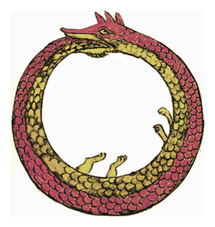
Ouroboros, from a 15th century alchemy manuscript, synosius, 1478, drawn by Theodoros Pelecanos. Wikipedia; public domain.
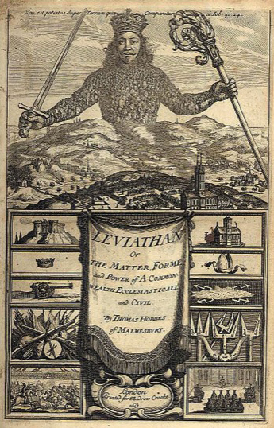
Frontispiece, Thomas Hobbes, Leviathan, London (1651).
The icon, wherein the Word (logos, that is, the ideal concept; in our case the political collective) takes on flesh, provides direct, experiential access to these enigmatic relationships.
The term used by the early Church writers to describe these relationships of the Incarnation was “economy” (oikonomia), a discourse of practical belief rather than reasoned theological argumentation.5 A semantic warning is in order: our own times have developed a quasi-religious cult around the economy itself, a belief that it is the locus of invisible forces that produce a whole range of visible effects, necessitating its management by global institutions and creating its own pragmatics of governance and hierarchy of power—an economy of the economy, if you will. It is difficult for us to avoid anachronistic projections onto the past in recovering this wordʼs sedimented, historical meanings, whereas to bring the past, Christian meaning into the present involves an act of translation that can not help but suggest that todayʼs global belief in the economy is itself a form of idolatry.6 There is no easy access from our own, fetishized concept of the economy as an autonomous, self-regulating system, a modern-day Oroborus, to the Christian economy of belief. But this obstacle, while slowing the analysis, is a critical benefit of engaging in it.
Economy has an earlier use in pre-Christian Greece, of course, more familiar and less problematic to modern readers, that finds its classical formulation in Aristotle, who understands economy as a concrete and pragmatic science for the orderly governance of the “household” (oikos) as the fundamental, social unit of production, an agrarian homestead based on patriarchal relations of inequality and interdependence (husband-wife; parentschildren; and, that to which he gives greatest attention, master-slave). Oiko-nomos—literally, “household law”—provides social cohesion as the precondition for political life. But even for Aristotle this law presupposes a historically prior moment: the original appropriation of the land on which households are established.7 Land may be claimed or conquered, confiscated or colonized—the more violent means were a political reality in the expanding empire of Alexander, whose tutor Aristotle was.8 This original appropriation, the historical act that produces what Schmitt calls the nomos, the ordering Law that legitimates all subsequent laws, is presumed in household management, as are slaves as the trophy of war. Oikonomia accepts private property and human inequality, both of which precede the polis, and determine its form.9
The apostle Paul seized radical title to the nomos by an original appropriation of the word itself.10 In the Pauline epistles, oikonomia, through a stunning translation, morphs into the Christian order of God. The divine economy inverts the earthly one: all are equal, including slaves; all are “brothers,” including women; church administrators are not masters, but themselves “slaves” who do Godʼs work. This household (oecumene) knows no territorial boundaries: “Now therefore ye are no more strangers and foreigners, but fellow citizens with the saints and of the household (oikos) of God” [Ephesians 2: 19]. The established nomos is suspended by Paul. “For ye are not under law (nomon), but under grace (kharis)” [Rom. 6: 14]. Paul is “against the law,” as Alain Badiou writes in affirmation. All light is placed on the historical event of the Incarnation, its dis-orderly power. Badiou announces: “Grace is illegal”[77].11
This historical event is the source of what can be called a new, Christian nomos—an antinomial nomos that disrupts earthly power and holds it in abeyance. But the disruption is virtual only: Paulʼs nomos rules the realm of the spirit, leaving the material world unchanged. Obedience to the Roman imperial order is still binding; at the same time the term oikonimia, deployed in the spiritual realm, reasserts its law-preserving function by commanding the obedience of the “new man” (Paulʼs repeated term) to live according to Christianityʼs predestined plan. The revolutionary implications of Paulʼs newly revealed economy are thus limited, and given Paulʼs renaissance of popularity among critical theorists today (Badiou, Žižek, Agamben, to name a few), these limitations need to be kept in mind. If for Paul there is no principle of exclusion regarding citizenship, if the Churchʼs equality includes women and slaves, their position as foreigners in the earthly city, and as women and slaves in the earthly household remains unchanged.12 Paul calls himself a slave (doulos) to do Godʼs work, but he chooses in life to be tried as a freeman and Roman citizen. In Paulʼs Christianity, Godʼs household coexists with Aristotleʼs patriarchal one, as His kingdom coexists with pagan Rome.13
The insufficiencies of religion as an alternative politics, neglected by the historical Paul, could remain unaddressed not because they were invisible, but because they did not belong to the economy of truth.14 Only by leaving the magically closed circle of belief with its immanent logic would these mundane contradictions become apparent. And only by the incorporation of the rulerʼs temporal power into the Christian economy would they appear to disappear, which is exactly what happened in the early fourth century with the conversion of the Roman Emperor Constantine to Christianity and its elevation to the official state religion by the centuryʼs close.
Christian Sovereignty
A Christianized Roman Empire fell within the mimetic logic of correspondences: one God, one Emperor, uniting church and empire into a single world, a single historical narrative, and a single visual economy. The folding of spiritual power into the religious economy finds expression in the public visibility of belief that reached a high point under Justinian I, whose image is depicted as mirroring that of Christ [see image 4]. Historians describe this development as the origin of “Christian art,” although “Christian visual economy” might be a less misleading term.15 Its iconography built on pagan precedents. Imperial Romeʼs visual culture was already well developed before the adoption of Christianity, and there were “constant exchanges” between Christian and imperial images.16 Byzantine visual aesthetics, blending the iconicity of imperial Rome with that of the Incarnation, created an immense force-field of affective power.17
What was new about the Christian imperial nomos was precisely the sovereignʼs transcendent claim, which brought into alliance the economy of belief and the economy of power, a “double discourse of spirituality and conquest” [Mondzain, 115, 223]. The sovereign figure of the emperor became the iconic embodiment of Christian political legitimacy by bowing down before an enthroned Christ (the gesture of proskinesis) [see image 5].18 This act of submission, while in keeping with Paulʼs inversion of servant and master, resulted in an enormous gain of sovereign power. The emperorʼs obedience to God was evidence of the transcendent source of his power, which now spread to include the formerly profane economy of social and political life. Garth Fowden writes that this involved “an entirely new understanding of the Roman emperorʼs role, inconceivable except within the context of allegiance to a universalist religion”; the more the emperor “subjected himself to God, the more God subjected to him the whole world” [93].19 In short, God took the side of the imperial battalions.
Protestants since the Reformation have pointed out that the New Testament never mentions the icon, nor does it deal specifically with issues of visual representation. This is true in regard to the icon as artifact, an object of veneration. But scholars are right to insist that Paul affirms the foundational idea of the icon, the relation of the visible to the invisible, in his repeated assertions that Christ was born “in the image [eikôn] of the invisible God [tou Theou]” [Eph . 1: 10 and 3: 9; Col. 1: 15].20 And it is Paul whom the Christian churchmen cited in defense of the icons during the centuries-later struggle of the church against the imperial policy of iconoclasm.21 Marie-José Mondzain makes a compelling argument for the centrality of the icon for what needs to be called the political philosophy of Byzantium, Christian and imperialist in nature, which is expressed in the visual economy of the image.22
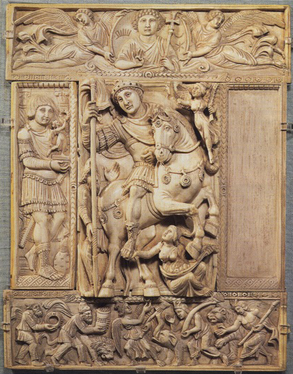
Justinian as Defender of the Faith. Louvre, Paris. 6th century. Ivory, Early Byzantine.
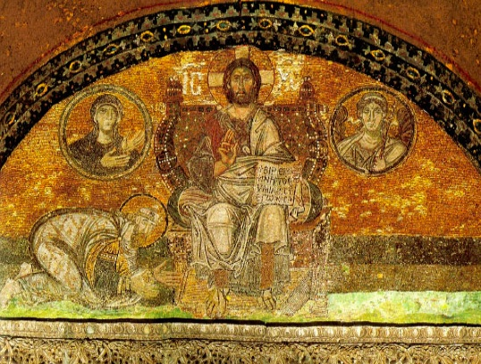
Proskinesis: the gesture of bowing down before an enthroned Christ.
She describes the Christian economy as a “science of relations and relative terms,” a set of correspondences (rather than equivalences) among “disjunctive realities,” for which icons are the “structural relay,” weaving together the whole “like a one-of-a-kind cloth” [Mondzain 20, 22, 64].23 Mary, the Virgin Mother of God (Theotokos), as the untarnished, pure place of God-become-flesh, is the central icon of this economy, providing the pictorial equivalent of the entire New Testament message of the Incarnation [Mondzain 109, 159 ff.] [see image 6].24
The icon is a key to political legitimacy in Christian society. It visualizes the Christian nomos, which in turn became the legitimation for world domination. We are not suggesting, nor does Mondzain, that the whole visual economy was a ruse deployed consciously by the authorities, an instrumental means of deliberate and cynical manipulation. On the contrary, from within belief, there is only piety and affective engagement. All believers, all venerators of the icons, benefit from the Incarnation, as they, too, are created in the image of God. The point is that this Christian economy needs no proof or reasoned explanation. The icon is instrumental not because seeing is believing (the divine itself remains invisible) but because the believing viewer feels the presence of the Incarnation, which is in no way thereby robbed of its mystery.25 In a subtle but profound transformation, iconicity founds a new, visual order of power [see image 7].
Imperial Vision
It is difficult to exaggerate the importance of the new visual economy for the vast imperial project that I have called the Christian nomos and that Mondzain describes as the first “iconocracy”: “To attempt to rule over the whole world by organizing an empire that derived its power and authority by linking together the visual and the imaginal was Christianityʼs true genius” [151].26
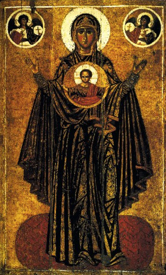
Virgin Orans, Kiev, 12th century.
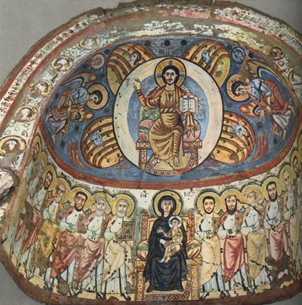
Bawit, Monastery of St. Apollo, 5th Century: Christ in Majesty and Virgin and Child with Apostles. Coptic Christians of Egypt.
Although at fist anchored in the church edifice as a microcosm of the Christian world, icons were also and increasingly portable, traveling on tour to perform miracles and displayed in processions that walked around cities to protect them from attack. Like the imperial coins that circulated throughout the economy of political power, they circulated throughout the economy of belief [see image 8].
There is, Mondzain writes, no limit to the spread of the power of the image;27 the icon “has no frame, no limiting structure surrounds it” [162]. Indeed, the spread of icons exceeded the boundaries of the Byzantine empire, which were radically diminished as a consequence of expanding Islam, causing the disjuncture of power in the Christian nomos between Byzantine Emperor and Byzantine Church that shaped the political context of the iconoclast crisis.28 Mondzain writes: “We are today heirs and propagators of this iconic empire” [151]. With Byzantium: “The process of globalizing the image across the whole world has begun” [162]. We are at the pulse of our argument, as we move, with Mondzain, from the Byzantine iconocracy to the modern “empire of the gaze,”from patriarchal church management to the global media industry, from the first imaginal empire to our own. In an aside—that stands out to readers excluded from the charmed circle of experts on the Byzantine iconoclast crisis—Mondzain writes: “From the specific standpoint of provoking belief or obtaining obedience, there are no great differences between submitting to a church council or to CNN” [223].
The original, French publication of Mondzainʼs book was in 1996, that is, when CNN was just becoming a truly global presence and satellite-fed media were not yet fully imbricated within political power.29 Today, the relevance of her observation exceeds what she could have imagined. Is it not true that the greatest threat to political hegemony today comes from challenges to just this iconic authority? If the media does not see something, it has no political existence, and conversely, if the media sees it—photographs of Abu Ghraib are a notorious example—then the wound to hegemonic power can be deadly. What differentiates the attacks of September 11, 2001, from other instances of terror is precisely the destruction of the visual economy of power. Terrorism is the iconoclasm of our time.
Iconoclasts are not against the power of the image; they want to control it, monopolizing the visual economy and, with it, truth [Mondzain 223]. Both sides are against idolatry, which renders its practitioners “unworthy of sovereignty” [Mondzain 223].30 The debate is not about the icon but about its management [Mondzain 120].31 If this description resonates with the media-aware staging of terrorist attacks, there is a domestic parallel as well. Mondzain describes the struggle between Byzantine Emperor and Byzantine Church as a case of two bureaucracies, imperial and ecclesiastical, vying for visual control. She calls these competing image-managers “iconocrats,” and in an era when iconocrats under Carl Rove in the White House were able to force iconocrats in the news media to toe the patriotic line, we, even more than Mondzain at the time she was writing, appreciate what havoc can be wrought globally by the iconocrats—todayʼs practitioners of what Hannah Arendt called the banality of evil, implementers—not creators—of policy, who, it will be said, were only doing their job [see images 9 and 10].
In fact, historical outbreaks of iconoclasm are a mark of weakness, not strength, reflecting a division between divine and earthly power that is already taking place. This was true of the Byzantine struggle in the eighth and ninth centuries, when more than half of the five Christian patriarchates (Alexandria, Antioch, and Jerusalem) had been for generations in lands claimed by the new Muslim Empire.32 It was true at the time of the Protestant Reformation, when the centrifugal force of national monarchies pulled the Holy Roman Empire apart. It is true today, when two orders of power—the supranational, global economy in which the visual industries now operate and the ultranationalist political hegemony that the US administration proclaims globally—as both strive, at times as allies, at times as adversaries, for control over the visual economy. The iconic power of the news is the ability visually to close the gap between the sovereign as a person and the “people” as an abstraction—or, alternatively, to widen that gap beyond repair. Are the rulers false gods, empty idols “not worthy of sovereignty”? Are the news iconocrats traitors to the republic, or defenders of the true belief? “Whoever monopolises visibility conquers thought itself and determines the shape of liberty” [223], writes Mondzain: “No power without an image” [Mondzain 158].
No power without an image. Nothing is clearer to the millions of American citizens who have demonstrated repeatedly against US imperial aggression than the fact that media news controls the economy of democratic belief. Protest against governmental policies and actions is a right, but it is not power if it remains invisible. In the 1960s and 70s, the mediaʼs image-economy worked to the benefit of theatrical politics, creating an alternative political stage and producing new subjectivities that escaped the manipulation of media simulacra. But today, the privatized and monopolistic news industry diminishes these possibilities. The theatrics of opposition movements go unnoticed by the larger viewing public, playing to small audiences of the already converted.
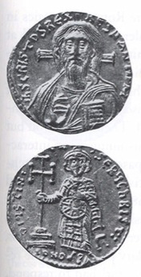
Gold soldius of Ustinian II with the face of Christ on the obverse (inscribed: Jesus Christo Rex Regnatium) and portrait of the emperor on the reverse. Mint of Constantinople. First reign of Justinian II. This was the first Byzantine coin to show a portrait of Christ.
Live news is the living body of todayʼs iconocracy. Satellite-video is the world-become-flesh. We move from believing what we see to believing in what we see, not only when we see it, but when we donʼt. Even when oppositional images enter into the visual economy, they do not raise doubts in the true believer, for whom they become a welcome test of faith. For their part, the Islamic militants pursue a visual policy of reality television, as if only real blood, only real destruction, only acts of terror against the public of viewers could produce the disrupting, dis-agreeing images that escape hegemonic control. But this tactic can also be rendered ineffective by the faithful. In the metaphysical world of the iconomy, the believer interprets such violence as the work of the devil.33
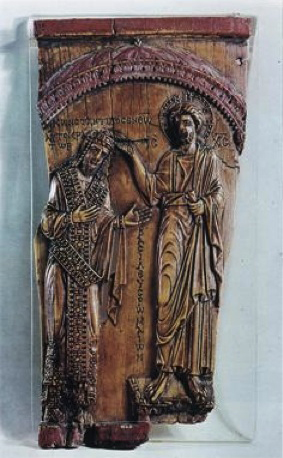
Christ crowning Constantine Porphyrogenitus, 944 AD. “Constantine holds hands in prayer and adoration towards Christ, who crowns him. The emperor is shown without a halo, but he is in direct contact with the deity.”
President George W. Bush receiving an honorary Doctor of Laws degree from the University of South Carolina. May 9, 2003.
Exorcism becomes the duty of the patriotic manager of iconic display, whether in the White House or on Fox News, for “only the master of the image,” that is, the iconocrat, “will know what is right, good, and equitable to render visible in it, which is to say, to make known and to cause to be believed …” [Mondzain 169].
Sovereignty cannot rule, has no legitimacy, and therefore has no power if it does not partake in this visual economy of truth.34 The iconomics of power goes far beyond a policing function. News iconicity is fertile, generative, and proliferating.35 This is our new political situation, and it is global in scope—“the icon has no frame, no limiting boundaries”—just as in Hardt and Negriʼs influential account, “empire” has no frame, and the multitude that inhabits it is itself a shadowy icon on the global screen, anonymous and amorphous, not yet an alternative to iconocratic domination. It is with these considerations on a historical/metaphysical/political level that we turn from the iconomics of sovereign power to the cinema trilogy of Alexander Sokurov.
Sokurov’s Sovereign Trinity
The Cinematic Antidote
The Russian director Alexander Sokurov recently completed three films on twentieth century rulers who were icons of absolute power: Hitler (Moloch, 1999), Lenin (Taurus, 2000), and Hirohito (Solnze, 2004), a trinity of sovereign figures who ranged on the political spectrum from fascist, to communist, to divinely ordained emperor and whose cultural contexts were strikingly diverse. The film trilogy has evoked controversy. Hitler appears not to know about the concentration camps, Lenin is not responsible for his political decisions, and the depiction of Hirohito neglects the fact that he refused to sue for peace before the US nuclear attack. Sokurov has been criticized for his “contempt for politics and disregard for history” and for contributing to a turn to the right in cultural production.36
Audiences have been baffled by the films as an unconventional hybrid of documentary and fiction.37 Sokurov presents elements of the historical past with meticulously accurate detail, including costumes, props, sound, speech, and personal characteristics, but as surviving fragments in new and imaginary arrangements. The leaders are played by professional actors in the original languages: German, Russian, and Japanese (the same actor, Leonid Mozgovoi, plays Hitler and Lenin; Issey Ogata is brilliantly cast as Hirohito). While Hitler moves in the historically accurate setting of his Bavarian retreat, the same modernist-architectural structure is used for Leninʼs dacha and the Japanese emperorʼs wartime refuge. Real history is the site of all the films (Hitlerʼs invasion of Russia in summer 1942, Lenin after his second stroke, Hirohitoʼs surrender to MacArthur), but the camera that once produced the iconicity of these rulers as public figures operates here on a private level. The POV is that of the servants or guards. And what is there to see? These twentieth-century leviathans, the iconic embodiments of monstrous power in the modern age, are presented to us as impotent, powerless, and dying.
The audience is disappointed. We no longer expect them to be shown as the Savior of the collective but, rather, as the anti-Christ, the iconic embodiment of evil, a Satan who leads the people astray. We want to see these icons smashed. We might even have tolerated seeing them somehow, if perversely, redeemed, but we are given neither righteous judgment nor redemption. Sokurov provides no satisfaction for our iconoclastic desire, often met by conventional films about historically defeated leaders, and the effect is deeply disturbing.
Every film produces its own economy, a relation of elements from reality as a meaningful whole, miraculously making visible the frameless and mobile world that they portray. The iconic power of images is essential for this miraculous effect. The industry is frank in acknowledging the stars as “idols,” venerated by a public whose affective engagement is extreme. But documentary film is supposed to operate differently. Its portrayal purports to use the iconic authority of the image to restore historical truth, which in this case means exposing defeated heroes as antiheroes, thereby justifying the winners in history and vindicating those who have survived. In Sokurovʼs trilogy, the iconic power of the cinema form is fully engaged, the capacity to turn intensities, color, sound, and mood into a palpable experience of presence, but the strangely crafted convergence between documentary detail and staged theatrical effects goes against the grain of documentary conventions, affecting us on a different level. Form—the cinematic economy—becomes content. These films are not about the sovereign power of national leaders; they are about the sovereign power of the visual, the experience of the image and how it relates to political belief: no power without an image. The iconoclastic desire is for evil rulers to be responsible for historical catastrophes, so that true sovereignty can be restored and humanity redeemed. Sokurov turns this logic inside out. The sovereign is not responsible. Absolute rulers are powerless. And the audience disappointment begins to set up its own economy. Our complicity in the construction of sovereign power is offered up to us for critical investigation.
Moloch
Hitler as depicted in Moloch, the first of Sokurovʼs trilogy, arrives with Boorman, Goebbels, and Goebbelsʼs wife Magda to join Eva Braun for a private getaway at his Bergtesgarten retreat [see images 11 and 12]. The staff, which includes Eva, lines up to receive him. The camera brings us into the presence of Hitler during an unremarkable day of petty events. He ruminates on meat-eating over vegetarian soup, indulges in hypochondriac obsessions, defecates out of doors, and makes inane if not insane conversation. He tyrannizes the group not by his will, but by the arbitrariness of his actions. Like living with a child on the brink of a tantrum, the most trivial moments seem precarious. It is not clear Hitler understands what he is doing. At an afternoon outing, the guards appear to be protecting the German people from viewing the silly antics of their rulers (while we look through their booted legs and observe all).
We are interested in how the miraculous economy of sovereign power interacts with the miraculous economy of the cinematic image. We recall Leni Riefenstahlʼs pseudo-documentary, Triumph of the Will, in which the auratic potential of cinema is used to reinforce the iconic connection between der Führer and das Volk, moving the audience to empathic identification. Riefenstahlʼs role as an iconocrat was to make the film miracle and the miracle of sovereign power converge. The contrast with Moloch could not be greater. Sokurov sets these miraculous powers against each other, so that we must give up either faith in the cinema economy or faith in the economy of power. It is a critical strength of the film to take us away from the hero/antihero binary. “The illusion of heroism is to be avoided,” Sokurov insists: Hitler appears as a man youwould pass on the stairs [Sokurov, interview, Moloch, DVD].
Sokurov believes in the importance of titles. Moloch was an ancient deity associated with the sacrifice of children. Hobbes refers to the Leviathan as Moloch, absolute sovereign power as a human creation (a pagan idol). In Fritz Langʼs dystopian movie Metropolis (1927), the idol returns as the name of the infernal, underground factory to which the lives of laborers are sacrificed. Sokurov says that in Shakespeareʼs day, an individual sovereign could be responsible, but now it is historical forces; and even Hitler only succeeded in playing a role within them, “taking out as much power as he needs” to act the part of the tyrannical ruler [interview, Moloch, DVD]. But the abstract historical forces to which Sokurov refers are nowhere present in the work. The cinematic experience cannot be directly translated into the directorʼs political philosophy. We must ask what the movie says.
The visual climax in terms of the economy of cinema is in the entertainment room after dinner. Hitler watches a newsreel of war propaganda, a historically authentic document of die Deutsche Wochenschau depicting a Nazi triumph on the Eastern Front (the summer offensive into south Russia that began on June 28, 1942, leading to the brutally devastating battle of Stalingrad, indicating the historical moment in which Moloch takes place). The camera cuts outside the viewing room to a contemporary, real shot of the Bavarian landscape. Beethovenʼs Ninth Symphony plays faintly. Cut back to the entertainment room, showing the newsreel of Knappertsbusch conducting a 1942 concert performance of this symphony, which has layers of historical allusion: the Wars of Napoleon in Beethovenʼs own time; the Nazi program of spreading German culture to the world; and in our time, the symphonyʼs performance at the official celebration of the fall of the Berlin Wall.
As Knappertsbusch conducts, the black-and-white newsreel pans the concert audience. In a striking overlay of cinema elements, the actors portraying Eva Braun and Magda Goebbels squeal with pleasure when they recognize Joseph Goebbelsʼs life-size image in the audience, and press bodily against the screen to touch the newsreel figures [see image 13]. From behind the screen the shadow-figure of Hitler plays conductor, pretending to orchestrate the whole. This triple montage is brilliant cinema, the construction of an economy of affective engagement that superimposes archive and acting, real film and filmed reality, audience viewed and viewing audience, a convergence of economies that leads us to want to ferret out our own positioning, as the film blocks the miraculous economy of sovereign power by means of the miraculous economy of the cinematic image. If not historical forces, then we are the source of dictatorial power. The finger of responsibility points to ourselves.
Sokurov connects the political icon to the religious icon directly. A priest visits. He comes as suppliant before Hitler, whom he addresses as a holy man, begging him to spare a life, bestowing upon him the saintly role of intercession. Hitler responds from
Press photo.
Sokurov.
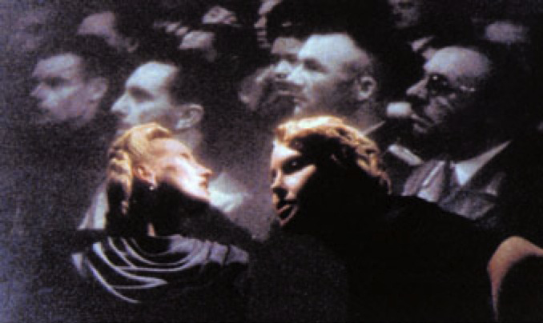
Sokurov, Moloch.
the universal perspective of sovereign power, which treats individual victims as totally irrelevant: “Millions of flies die, but there are still flies.” He then states slowly, with sudden clarity, the secret truth of sovereign rule: “If I win, then everyone will pray to me. If I lose, then the most absolute nothing will treat me as a doormat.”
Eva Braun acts the role of obsequious worshipper of Hitler, but does not believe it. Hitler, who cannot hide his impotence from her, is relieved. As they tussle in his bedroom, she bursts out: “you are NOTHING. Zero,” and he appears delighted. The humanity of this sadomasochistic exchange is its redeeming honesty. In the filmʼs first scene, Eva fingers a locket that contains two images, Hitler and the Madonna and Child. Eva is all body, vital and athletic, yet virginal, and it causes her visceral pain. The women in all of Sokurovʼs films are the redemptive moment in the literal sense of the Theotokos, Mother of God, accomplishing the humanization of a nonhuman, indeed inhuman force. But Evaʼs destruction of the aura of Hitlerʼs power brings no salvation. In Moloch, the documentary fragments cannot be pieced together to create a human where a sovereign was once imagined.
Taurus
In 1924, Maiakovskii composed a poem, “Komsomolskaia,” on the occasion of Leninʼs death [see image 14]:
“Lenin” and “Death”— these words are enemies.
“Lenin” and “life”— are comrades…
Lenin— lived. Lenin— lives.
Lenin— will live.
In the film Taurus, eternal life is precisely what we do not see. Lenin is shown, having already suffered two strokes, as failing, fading, drifting in and out of clarity and bodily control, repeating constantly to his caretakers: я сам ! Iʼll do it myself! But even physical autonomy is no longer possible. We are shown Lenin smashing objects and overturning the lunch table; Lenin dragging himself from the bed, being heaved into a car, and standing in a tub to be bathed. In Moloch the sovereign figure of Hitler acts the part of the human that he cannot be. The judgment of Lenin is less severe. The camera focuses on his all-too-human, mortal body, mere life, naked before us as before his servants. It takes great effort to move this natural body with its heavy, material force. But—materialism be damned!—Lenin has no desire to shake off this mortal coil.
Soviet Marxism deified world history, declaring that its course would insure the salvation of the masses. Revolution, wrote Marx, is historyʼs midwife, and Leninist voluntarism claimed the role of inducing labor. The Party was the superhuman force capable of pushing history forward on a planetary scale. But in Sokurovʼs film, nothing of sublime proportions remains. Isolated and alone, Leninʼs naked body personifies no collective meaning. No one telephones from Moscow. His country dacha is totally cut off from political power. This hero of the nationʼs electrification lives in the shadows. Lenin comments that thunderstorms are the manifestation of electricity, not, as his mother believed, the result of angels fighting in heaven. Yet he refuses to accept heavenʼs indifference, which his own philosophy insists is true. Lenin wills against history, against time, against his own material body, and they defeat him. Material history, transient and forgetful, trivializes human determination. In the film, only nature in its ungovernable and careless abundance—a field of white flowers, summer thunder, the forest in the wind, insistent birds at sunset—displays the potency of a metaphysical truth.
Unlike Hitler, Lenin is all too human [see images 15, 16, 17]. Krupskayaʼs affection and care for her invalid husband are authentic, maternal, comforting as she reads to him, takes him on a picnic, tolerates from him the violent outbursts against his own futility. We engage with the leader at a scandalous level of exposure. And yet his loss of aura is the opposite of degrading. Its effect is profound and even spiritual, precisely because it is anti-iconocratic. Natural images of the physical world, made timeless by the miracle of cinema, suggest a materialist metaphysics, where the detail of Krupskaya hiding a hole in her stocking carries more affective power than the entire mythology of the proletarian class.
Stalin pays a visit. His posturing of solidarity with the dying man does little to conceal his plotting as the self-proclaimed heir-apparent of Leninʼs power. The figure of Stalin moves through the house like a shadow. We strain to make out the two sovereign forms against a murky background. This historic meeting is filmed without the illumination that might shower legitimacy on Stalinʼs figure. For a revolutionary regime, the problem of succession is critical. And it is by revering the dead body of Lenin, setting up his corpse as itself the icon of materialist belief, venerated by the masses who make a pilgrimage to his sepulcher, that Stalin will provide for his own political legitimation.
“Proshevsky! Are the successes of higher science able to resurrect people who have decomposed or not?”*
“No,” said Prushevsky.
“Youʼre lying,” accused Zachev without opening his eyes. ʻMarxism can do anything. Why is it then that Lenin lies intact in Moscow? He is waiting for science—he wants to be resurrected.”*
—Andrei Platonov, The Foundation Pit (1930)
Lenin became an icon only after his death. His wife, Krupskaya, recalled that in the first weeks of Bolshevik rule, “nobody knew Leninʼs face…. In the evening we would often…stroll around the Smolny, and nobody would ever recognize him, because there were no portraits then” [qtd. in Buck-Morss 70]. She strongly opposed his mummification. “If you want to honor the name of Vladimir Ilich,” she wrote, “build day care centers, kindergartens, homes, schools” [qtd. in Buck-Morss 72]. Ernst Kantorowiczʼs study of the kingʼs two bodies describes the symbolic double as ideal form of the merely human king that can guarantee the perpetuation of sovereign rule after death and natural decay. But in the Soviet inversion of Christʼs resurrection, it is the flesh of the human sovereign that does not decay. The material body exists in perpetuum, as miraculously as a movie starʼs image on the screen.
Taurus, the bull, is the astrological sign under which Lenin was born. It is the name of the mythical, sacred bull sacrificed to appease the gods, and Sokurov suggests this was Leninʼs fate in the sense that the sacrifice of Leninʼs natural body to iconic power allowed Stalin to develop a living cult of personality as his successor. In the 1930s, the inclusion of Lenin icons extended the economy of the socialist revolution everywhere in the landscape of daily life. “Lenin corners” replaced religious icons in the home.
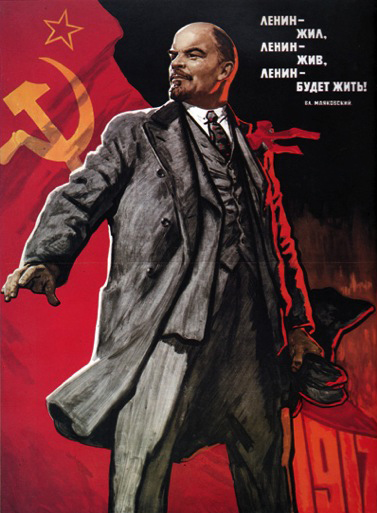
1917.
Sokurov, Taurus.
Sokurov, Taurus.
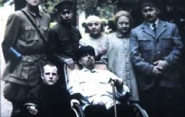
Sokurov, Taurus.
Cinema was recruited for the iconic task. In the 1930s, particular actors became recognizable as the prototype of Lenin through repeated portrayals in hagiographic films. Lenin statues, Lenin busts, Lenin pins—these “reiterations were meant to be material evidence that ʻLenin is always with us,ʼ effecting the apparent elimination of historical transience by extending the recent past limitlessly into the future” [Buck-Morss 71]. Against this myth, Taurus makes a cinema icon out of Leninʼs living body in decay. The vulnerability of life is raised to a metaphysical level—a materialist metaphysics, suggesting a transformed vision of political legitimation.
Solnze You and I, we are cherry-blossoms of the same class, we fight for the army and navy air-wing Like the cherry blossoms which fall, we will fall, but we will fall in glory and in fashion. — Japanese military song38
Solnze, “The Sun,” the third of Sokurovʼs films, released in fall 2005, is a meticulously filmed account of Hirohito, the last divine emperor of Japan, at the moment of his surrender to General MacArthur, and his abdication from power as descendant of the Shinto Sun Goddess [see images 18 and 19].
The cinematic strategy adapts to the specific conditions of Hirohitoʼs sovereign power, portraying his defeat as liberation from the ritualized existence that has appropriated his material body since birth. As he lives on the brink of falling into merely human being, the servants persist in investing his person with divinity. Every physical motion is an act of faith, as they serve his meals, record his words, and dress him with precision—in military dress when he meets with his ministers, in a scientistʼs white coat when he does his biological studies, in a Western suit and hat when he is taken to MacArthur to surrender. When the emperor speaks frankly to his valet that his body is no different from the rest of humanity, the servant, buttoning his clothes with ceremonial care that causes drops of sweat to appear on his bowed head, responds: “Everyone knows the Emperor is God in the flesh.” There could not be a clearer definition of the sovereign as icon, as a god become-man, whom the people worship and love. The emperor reflects: “And because of this love, I could not stop the war.” Hirohito did not grab power. Divinity was not his choice. He has no stake in continuing the myth that has imprisoned him as tightly as the war bunker to which he is confined.
This descendant of the sun is exposed to natural light only by climbing up from the underground quarters to his science laboratory, where, with Allied planes still bombing above, he indulges in his hobby of marine biology [see image 20]. But it is more than a hobby. Natural life is his religion. “What a miracle,” he exclaims, examining under a microscope the body of a hermit crab, whose back bears the design of an angry samurai. “What heavenly beauty!” This reversal of roles, the divine emperor worshipping material nature, sets the stage for a cinematic revelation when, as Sokurov says, “another reality shines through” [interview, Moloch, DVD].
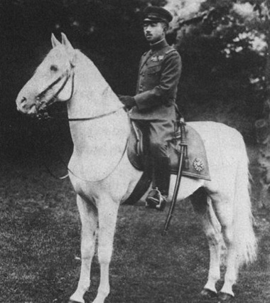
Sokurov, Solntse.
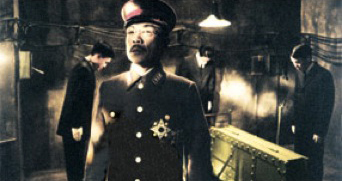
Sokurov, Solntse.
Sokurov, Solntse.
In his meticulous filming, in the quiet care of the director for every detail of light, sound, gesture, pace, and movement, Sokurovʼs reverence, echoing that of the servants, is for the material world, the beauty of which appears as transcending all historical legends of good and evil, friend and foe, destruction and triumph, victory and defeat. In both content and form of the film, it is human care itself, carefulness, that Sokurov shows us, and we are deeply moved.
Again, as in Moloch, the filmic climax is an interplay of visual layers without verbal commentary or concepts, a cinematic economy that approaches pure thought solely through the relationship of images. It happens when the emperor is alone—except for the servant who watches through a crack in the door; except for ourselves. Hirohito lies down for his scheduled nap. We watch his sleeping body first agitated by bad dreams, then calm, curled on his side, eyes closed, and a smile on his face. It is after he awakens that, eyes wide open, he sees a vision, and we see it too, as a background noise of exploding bombs continues seamlessly into the dreamlike sequence: shadows, fish-forms swimming in the sea, morphing, as the noise grows louder, into bomb-forms falling through the sky, and in the background, the underwater depths, there shimmers the liquid fire of burning cities, the absolute material destruction of air attacks on the fragile life and precarious nature below.
The vision stops. There is silence except for the ticking of a clock. The emperor goes to his desk, sits, and prepares his ink. He writes to his son of the “terrible defeat,” explaining: “Our people had too much faith in the Empire … and hated the Americans.” He composes a waka poem that speaks of the transiency of nature and fleetingness of time: “the Sakura blossom … January snow … neither lasts long … frosty white … frosty whirlwind … death swallows both.” He takes out an album of photographs. The clock continues to tick loudly. The sequence of photos that we view—and view the emperor viewing—is archival, consisting of staged photographs that are themselves documentary facts: official portraits of Hirohito and of the Empress on the occasion of his enthronement [see image 21]; the Empress with their eldest son Akihito, mother and child, in the iconic mode of Theotokos, the Virgin Mary and Christ. The emperor leans down to kiss this icon, and then wipes the surface with a handkerchief to clean it of his touch. The photographs continue: Western movie stars—Greta Garbo and Marlene Dietrich. He bows his head close to these idols, but then shakes it in slight disapproval. Two loose photographs: Hitler and the German Kaiser, Hitler alone. Hirohito, who never met Hitler, puzzles over them.
The servant announces the arrival of American soldiers, who will take him to MacArthur. When he exits the house, in a Western suit and hat, the US photographers exclaim that he looks like Charlie Chaplin. He is pleased to be mistaken for a movie star.
Here is a photograph that appeared in the American press [see image 22 and 23]. Sokurov has copied such visual documents meticulously, thereby achieving the look of the photographed original. A series in Life magazine, the first to show the Japanese Emperor to the American public, contains formal and thematic elements that reappear in Sokurovʼs images in ways too close to be accidental [image 24 and 25].[39] At the same time, the conventional distancing of the documentary genre is absent. We feel the presence that only cinemareality can sustain. The official version of history, in Japan as well as in the United States, is that the American invasion and prolonged military occupation brought the “Japanese people” democracy, liberating them—and particularly their women—from the bonds of the imperial past (Hirohitoʼs willingness to acquiesce to this interpretation is a reason that his life was spared). But Sokurovʼs portrayal of the towering, confident military commander, MacArthur, as he interacts with the diminutive, frank, and worldly polyglot, Hirohito, gives us pause. MacArthurʼs smug assertions of the superiority of American democracy are hurled at Hirohito with a victorʼs sense of right that can easily be read as racial arrogance.
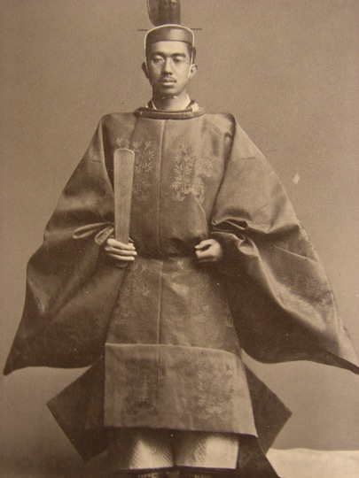
Hirohito’s coronation.
General MacArthur and Emperor Hirohito: Press Photo.
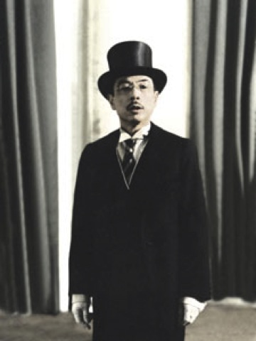
Sokurov, Solnze
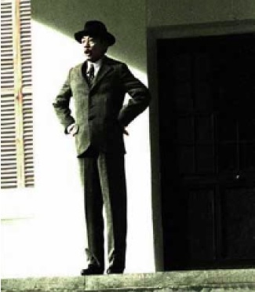
Hirohito Press Photo: from series in Life Magazine.
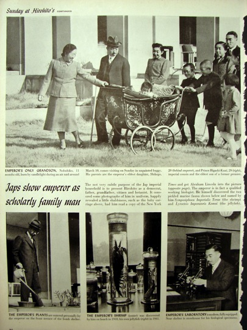
“Sunday at Hirohito’s.” Picture story of Hirohito, Life Magazine, 1945. “Japs show emperor as scholarly family man.”
Whereas Hirohito speaks of the “burden” of his divine role—“the emperorʼs life is not easy”—MacArthur describes “such people” as the spiritually oriented Japanese as the kind who “send millions of others to their death.” He criticizes the “Asian reserve” of people “always inside” themselves. And there is no hint of apology in his matter-of-fact description of Americaʼs special form of imperialism: “Do you know why the United States does not catch fish? Because we can buy all living creatures. We donʼt need the territory of others.”
More than once the film refers to the anti-immigration policies of the United States and Californiaʼs 1924 statute excluding, specifically, the Japanese. MacArthur, who has made his headquarters in the Sun Emperorʼs palace, takes on the sovereignʼs role (presumptions of sovereignty would cause President Truman to recall him from Korea in 1951). One does not sense that under the new command, the world will be more human, or that Hirohitoʼs gentle directness and lack of guile as he converses with his vanquisher can be dismissed as some funny quirk of national character. There is not a trace of Orientalism in the filming. The figure of Hirohito transcends national type and allegorical meaning. His humanity is overwhelmingly present. This cinema document does not justify history. It does not take place in the register of historical time at all. The curious effect of our empathy with the figure of the defeated emperor is to remove us totally from the economy of sovereign power, with its iconic order of good and evil grounded in collective identifications. We are able to see our liberation from sovereign power in and through the liberation of a human being from his sovereign role—something that the emperorʼs own people do not want, because it makes their own historical suffering meaningless.
In 1936, Stalin announced that the building of socialism was essentially completed. A man of peasant origins recalled that day:
I had just returned from my native village in the Viatka region, lost in the depths of the forest, cut off from the world by lack of roads. In the izbas there was mud and cockroaches and because of the lack of kerosene they had to go back from lamps to candles. I wouldnʼt have thought anything of that—after all before us shone the beacon of the bright future, which we were building with our own hands. Maybe we would still have to labor for another five or ten years, straining all our forces, but weʼd get there! And suddenly it turned out that this was socialism around me… . Never, neither before nor after, have I experienced such disappointment, such grief. [qtd. in Fitzpatrick 262-63]
What is being sanctified here? Sokurov says of his films: natural life. In Solnze, the greatest of the trilogy, there is no typicality in the treatment of those conquered or of the victors, whose triumph caused such material devastation. There is only authenticity of actors and actions, the carefully recorded details of daily life. But it is precarious life, raw, already wounded, exposing the enormous, metaphysical responsibility of humankind. This is not an answer to the problem of sovereignty. It is a different articulation of the question.
Works Cited
Agamben, Giorgio. State of Exception. Trans. Kevin Attell. Chicago: U of Chicago P, 2005.
Badiou, Alain. Saint Paul: The Foundation of Universalism. Trans. Ray Brassier. Stanford: Stanford UP, 2003.
Benjamin, Walter. “Critique of Violence.” Reflections: Essays, Aphorisms, Autobiographical Writings. Trans. Edmund Jephcott. New York: Harcourt Brace Jovanovich, 1978. 277-300.
Besançon, Alain. The Forbidden Image: An Intellectual History of Iconoclasm. Trans. Jane Marie Todd. Chicago: U of Chicago P, 2000.
Buck-Morss, Susan. Dreamworld and Catastrophe: The Passing of Mass Utopia in East and West. Cambridge, MA: MIT P, 2000.
Derrida, Jacques. “Force of Law: The ʻMystical Foundations of Authority.ʼ” Trans. Mary Quaintance. Cardozo Law Review 11 (1989-90): 973-1045.
________. Given Time: Counterfeit Money. Trans. Peggy Kamuf. Chicago: U of Chicago P, 1992.
Deutscher, Penelope. “Imperfect Discretion: Interventions into the History of Philosophy by Twentieth-Century French Women Philosophers.” Hypatia 15.2 (2000): 160-80.
Eire, Carlos M. N. War against the Idols: The Reform of Worship from Erasmus to Calvin. Cambridge: Cambridge UP, 1986.
Fitzpatrick, Sheila. Stalinʼs Peasants: Resistance and Survival in the Russian Village after Collectivization. New York: Oxford UP, 1994.
Fowden, Garth. Empire to Commonwealth: Consequences of Monotheism in Late Antiquity. Princeton: Princeton UP, 1993.
Friesen, Steven J. Imperial Cults and the Apocalypse of John: Reading Revelation in the Ruins. Oxford: Oxford UP, 2001.
Kantorowicz, Ernst. The Kingʼs Two Bodies: A Study in Medieval Political Theology. Princeton: Princeton UP, 1957.
Mitchell, Timothy. “The Limits of the State: Beyond Statist Approaches and their Critics.” American Political Science Review 85.1 (1991): 77-94.
Mondzain, Marie-José. Image, Icon, Economy: The Byzantine Origins of the Contemporary Imaginary. Trans. Rico Franses. Stanford: Stanford UP, 2005 Trans. of Image, icône, economie: Les sources byzantines de lʼimaginaire contemporain. Paris: Seuil, 1996.
Roetzel, Calvin J. Paul—A Jew on the Margins. Louisville: Westminster John Knox, 2003.
Schmitt, Carl. The Leviathan in the State Theory of Thomas Hobbes: Meaning and Failure of a Political Symbol. Foreword and intro. George Schwab. Trans. George Schwab and Erna Hilfstein. Westport, CT: Greenwood, 1996.
________. The Nomos of the Earth in the International Law of the Jus Publicum Europaeum. Trans. and annot. G. L. Ulmen. New York: Telos, 2003.
________. Political Theology: Four Chapters on the Concept of Sovereignty. Trans. and intro. George Schwab. Foreword by Tracy B. Strong. Chicago: U of Chicago P, 2005.
Sokurov, Aleksander, dir. Moloch. Koch Lorber Films, 1999.
________. Solnze [The Sun]. Nikola-Film, 2004.
________. Teletz [Taurus]. Lenfilm, 2000.
President George W. Bushʼs logic is that because the “terrorists” represent no sovereign state (presumed, following Max Weber, to have a monopoly on the legitimate right to violence), these actors cannot be treated as a normal enemy. See chapter 1 of my book Dreamworld and Catastrophe: The Passing of Mass Utopia in East and West. But state and sovereignty are not synonymous. As Timothy Mitchell reminds us, sovereign agency is “a powerful metaphysical effect” that lies in large part outside the formal government frame [94]. ↩
See Benjamin, “Critique of Violence.” This article has been badly misconstrued in recent years, largely as a consequence of Derridaʼs anachronistic and idiosyncratic reading of it in the article “Force of Law: The ‘Mystical Foundations of Authority.’” Benjaminʼs use of the term “divine violence” is much closer to Badiouʼs understanding of “the event” than to Derridaʼs reading, which leads Derrida to conclude that Benjamin is “still too Heideggerian, too messianico-marxist or archeoschatological,” and, ultimately, too close to the logic of a “final solution” [“Force of Law” 300]. Although Benjamin would have found socialist revolutions of more contemporary relevance than the French or American revolutions of the eighteenth century, he understood “divine violence” less as human violence than as historical rupture, based on a radical sense of social justice, as is demonstrated by his support for the theatricality of the globally enacted 1919 General Strike and, after 1924, the proletarian class. ↩
Not always successfully, however. The iconoclast, who declares the icon as fake, is believed at some times but not at others. Skeptical reason destroys the legitimacy of power already shaken by empirical events. In the case of the Protestant Reformation, those events included the Black Death that was followed by apocalyptic prophecy disappointed and the consequent sense of a distancing of God from earthly events. Through these lived experiences, the connection between belief and power became attenuated. Mediating rituals and institutions—liturgies, intercessions, and the sovereign figure itself—lost their capacity to knit belief and power together. When new printing technologies brought the Bible to the layperson in vernacular translations, confronted by the Word, the icons appeared deaf and dumb—condemned as idols, power drained out of them. The relics of the bodies of the saints were exposed as fetishes: “a cache of wooden images, some rags, a skull, a large tooth, and a snailʼs shell” [Eire 113 and passim]. Fetish and idol, terms that circulated with the voyages of discovery to disparage as false the gods of infidels and barbarians (the Incasʼ holy objects, stones worshipped by Africans), were turned back and applied in their European home.
Faith in the relics was faith in the entire hierarchy of power relationships that entangled temporal and religious authority: “Iconoclasm is a revolutionary act. It is a direct act of violence against the accepted social myth” [Eire 151]. Martin Luther opposed the iconoclasts and counseled treating the icons with indifference. If the images were powerless, he argued, then faith should not depend on their removal. He feared the political implications of iconoclastic acts as “preliminaries to riot, so that one fears neither order nor authority” [qtd. in Eire 69n]. The ProtestantReformation tampered with the entire social, religious, and political order in which the icons were inserted. Revolts against municipal governments were incited by appeals to the will of God. The Roman Catholic Church was declared the Anti-Christ, polluting and profaning the true religion. Idolatry was a constant danger.
A Catholic monarch (this is what was at stake in seventeenth-century England) would force false worship on the people. To expose the false god meant establishing the true one, whose orderly worship was the political program of the new Protestant sects. And when the Catholic monarch reclaimed the English throne and with it, absolutist power, he sought to reestablish legitimate authority by reviving the miraculous power of healing by royal hand. Auctoritas, non veritas (authority, not truth), Hobbes proclaimed, writing in the throes of the religious conflict and against it. For Hobbes, for the sake of order, the mere possession of sovereign power was sufficient reason to proclaim the king as Godʼs highest representative on earth [Schmitt, Leviathan in the State Theory of Thomas Hobbes 55]. Between May 1660 and September 1664, Charles II, reclaiming his miraculous powers, “touched with his royal hand approximately 23,000 persons, healing them by the sacred character of the person of the king” [54]. Schmitt comments on this apparent arbitrariness of divine politics: “A miracle is what the sovereign state authority commands its subject to believe to be a miracle; but also—and here the irony is especially acute—the reverse: Miracles cease when the state forbids them” [55]. ↩
“The degree to which the workers themselves could be relied upon by the party became a divisive issue in the early years. Lenin made the statement at the Eleventh Party Congress (1922) that people coming to the factory as workers were often ʻnot proletarians but all kinds of accidental elements.ʼ It led Shliapnikov, leader of the defeated Workersʼ Opposition, to respond with irony: ʻPermit me to congratulate you on being the vanguard of a nonexistent class… . We need to remember once and for all that we will not have another and “better” working class, and we have to be satisfied with what weʼve got.ʼ Leninʼs position prevailed, however, that working-class control meant party control, and it was to be implemented ʻonly at the state levelʼ [Buck-Morss, Dreamworld and Catastrophe 26-27]. ↩
Marie-José Mondzain writes: “From Paul onward, the economy designated not only the Second Person of the Trinity [the Son as the “economy of the Father”] but the whole of the redemptive plan, the purpose of his creation, revealed in the Incarnation, from the conception of the Virgin to the resurrection, including Christʼs evangelical life and the passion” [21]. The Church continued the religious use of this term, ridiculed in the Enlightenment by Voltaire, among others. ↩
In todayʼs academic discussions, “economy” is used outside of this realm (Pooleʼs “visual economy” of Peruvian photographs; Derridaʼs “impossible economy” of the gift) but as a metaphor, implying relational orders of reciprocity and exchange, or to make the point that meaning (value) is relational, dependent on context. In Derridaʼs Given Time: Counterfeit Money, the gift is, in contrast, aneconomic; what is thinkable (a gift) is impossible (because of economy). My point is that the modern meaning of “political economy” was built metaphorically on the Church economy that preceded it, and the Christian idea of grace is the locus classicus of the aneconomic gift. ↩
Schmitt writes: “the fact that land-appropriation and nomos are related has not been evident since the Sophists”; and yet, clearly, “the rule of nomos for Aristotle is synonymous with the rule of medium-sized, well-distributed landed property. In this sense, the rule of nomos means the rule of the middle classes as opposed to the rule of the very rich, on the one hand, and the rule of the masses of the poor on the other. It is necessary to read these passages in Aristotleʼs Politics very carefully in order to recognize the difference with respect to modern ideologies of the ‘rule of law’” [Nomos of the Earth in the International Law of the Jus Publicum Europaeum 67–68]. ↩
Under Alexander, the founding of new colonies in annexed territory and the distribution of conquered land to the imperial army were examples of literal appropriation, but even if the land remained in the hands of the original owners, it was subject to new relations of power, taxation, and control. ↩
Mondzainʼs study complements Schmittʼs observations: “The economy always supposes the considerations of ends” as a “science of relations and relative terms” that deals with the just preservation of a complex unity, governing it in a way that conserves the relations of power it contains [Mondzain 20]. ↩
“From Paul onward, the economy designated not only the Second Person of the Trinity, but the whole of the redemptive plan, fro ↩
Badiou accepts here the standard interpretation that the “laws” Paul challenges are not Schmittʼs nomos of the original appropriation of land, nor the laws of imperial Rome, but Jewish customary law, “which has become obsolete and harmful,” because it limits the universalism implied in the “Christ-event’ [15]. Yet he is arguing that Paul is absolving Christians from the need to adhere to earthly law in all of its forms, insofar as they are particular as opposed to universal, and insofar as they are “unfailingly ʻstatistʼ” in character: “If a truth is to surge forth eventally, it must be nondenumerable, impredictable, uncontrollable. This is precisely what Paul calls grace…” [76].
Badiou is interested in the structure of Paulʼs message, not its real-life historical effects. But such an abstract approach particularly in the philosophy of religion is extremely problematic, because it blinds the theorist to limits necessarily encountered by any self-proclaimed “universal” theory today. Badiou presumes a Western, Christian context of readers, as if anti-Semitism were no longer a problem, and as if Muslim victims of Islamophobia were not European citizens. Of course, Paulʼs universalism would not exclude them in theory, but it does in historical fact—and has from the beginning. Alexandrian Jews in the Christian era wrote of living in a sea of a-nomia, by which they meant Hellenic culture, which threatened to obliterate their identity totally [see Roetzel 50–59]. ↩
“Wives, submit yourselves to your own husbands…children, obey your parents…servants, obey in all things your masters…” [Col. 3: 18–22]. Regarding the veneration of Mary that figures so prominently in Christian iconicity, Mondzain refers to “the rest of us women” [100], noting that “real women…do not share” in Maryʼs power [160]. In contrast, Badiou finds the anomaly of women as equal “sons,” or slaves as equals of anyone, not worthy of theoretical comment or reflection [cf. the translatorʼs note x, and Badiou 63]. ↩
Paulʼs understanding is in opposition to the uncompromisingly anti-imperialist Christianity of John of Patmos, author of Revelations. For a political reading of this apocalyptic text, see Friesen. ↩
They existed, rather, in the register of profane history: Christian believers, scorning worldly wealth, bequeathed money and land to a Church that became wealthy. Evidence of early converts with wealth is derived from the establishment of Christian cemeteries (e.g., in AD 95 the cousin of the Emperor Domitian, Flavius Clemens, was buried in a Christian cemetery outside Rome). Through bequeathals of earthly fortunes, by the mid-third century, the church in Rome supported “from its common purse” 46 presbyters, 7 deacons, 7 subdeacons, 42 acolytes, 52 exorcists, reader, doorkeepers, 1,500 widows, and needy persons http://www.vor.org/truth/rbst/hist-theology. The spiritual salvation of humanity—remaining faithful to the event of the Incarnation—necessitated the material salvation of the church, a mundane concern that depended on Christian acquiescence to temporal power. As managers of the household of the Church, the “slaves” of God had the duty of divine instruction, which legitimated their power over the imagination and affective life of the believers. ↩
An icon, of course, was precisely not “art.” Ordering icons within the discipline of art history tends to make invisible the crucial aspect that the Christian oikonomia reveals: the presence in the icon of divine truth as it shows itself to the gaze of the believer. ↩
Alain Besançon writes: “There was already an imperial pagan art: only a slight shift was needed to make it a Christian art… . The theme of imperial apotheosis was transformed into the Ascension of Christ. The offering of presents [to the emperor] corresponded to the Adoration of the Magi, the adventus (the triumphal entrance of the sovereign) to Christʼs arrival in Jerusalem. In fact, court ritual provided a framework for Christian art. Just as artists represented the emperor and empress on their thrones, surrounded by their entourage, they depicted Christ and the Virgin among the saints and angels… . There were constant exchanges between the Christian image and the imperial image” [110]. ↩
Similarly to Besançon, “André Grabar in his study of the imperial cult in Byzantium, maintains that the Christian cult imported wholesale the cult of the emperor in order to render it to Christ and the Theotokos, the Mother of God [Grabar, LʼEmpereur dans lʼart byzantin].Thus emperors and empresses had themselves represented in the company of Christ, the Virgin, and saints, both in the profane world and in holy places” [Mondzain 156]. ↩
Triangulation through the institution of the Church was essential for this transformation. The Christianized emperor could only aspire to a mimetic relationship with God by being “numbered among the apostles” [Fowden 90]. Cf. Sthenidas of Lokri: “God is the first king and natural legislator. The king only becomes him by imitation” [qtd. in Mondzain 165]. ↩
“Constantine took a maximalist view of the emperorʼs job; in fact, he aspired to conquer the world” [Fowden 86]. “Constantine pursued this end, with regard to the Germanic nations across the Danube, through war, diplomacy, and support of the ecclesiastical mission. By piety, he vanquished the Goths and Sarmatians, claims Eusebiusʼs continuator Rufinus; the more he subjected himself to God, the more God subjected to him the whole world (universa)” [92–93]. ↩
This phrase is crucial to early Christian philosophical debates. See the discussion of Irenaus, Origen, and Gregory of Nicea in Besançon 86–108. ↩
It was art historians who initiated a terminological differentiation, reserving the term “icon” for a specific genre of portable artifacts, painted on wood, venerating the Virgin and Child, Christ and the Saints—whereas the sources themselves do not. Byzantine Christians applied “icon” to all holy images, although it was not until the eighth-century iconoclast crisis that a theologically grounded defense of icons was clearly articulated. Until that time, it was the pedagogic value of the icons that was emphasized. The relation between Godʼs image and the material icon was understood as one of similitude rather than representation. ↩
Every scholar knows the joy of having the right book come into your hands at just the right moment and appreciates the invaluable friendship of the intellectual colleague who places it there. I am indebted to Helen Petrovsky for suggesting, as I was preparing these comments, Mondzainʼs book Image, Icon, Economy, which contributes uniquely to the topic at hand. The study is ostensibly about Christian iconology and the iconoclast crisis in the Byzantine Empire. But Mondzain is one of those admirable and, lamentably, rare scholars who refuses to use her specialized field as an escape from the most pressing contemporary concerns, specifically, issues of power and belief as they are mediated within visual culture. Like many of us engaged in visual studies, Mondzain deplores the meagerness of the modern philosophical tradition when it comes to providing insight into the problems of the visual. Her book demonstrates, in contrast, the “modernity of patristic thought” and “fresh thinking” provided to us by a reconsideration of the writings of the so-called Church fathers in the early Christian world, which were deeply concerned with visibility and truth. Because “a very knowledgeable Byzantine specialist, religiously hoping to discourage me, declared [there was no Byzantine philosophy,] that only history, geography and religion existed in Byzantium,” Mondzain felt an “urgent” need to demonstrate that history, geography, and religion in Byzantium were “the very stakes of philosophy itself” [Mondzain xi]. Penelope Deutscher argues that historical critique for women scholars is itself a form of philosophy, citing Mondzain as exemplary, in the article “Imperfect Discretion: Interventions into the History of Philosophy by Twentieth-Century French Women Philosophers.” ↩
The prototype of the Virgin Mother with the infant Christ was alleged to have been first painted by the apostle Luke. ↩
“The divine economy watches over the harmonious conservation of the world and the preservation of all its parts as it runs in a well-adjusted, purposive manner. The incarnational economy is nothing other than the spreading out of the Fatherʼs image in its historical manifestation, which is made possible by the economy of the maternal body. That passage establishes the entry of the visible and the flesh into the concept of economy. In all cases, it concerns an organism or an internal arrangement whose visibility becomes accessible to us” [Mondzain 21]. ↩
“Truth is in the image, there is no image of truth”: “It is because this image has power that it is necessary to defend and protect it. It is not because it is true that it has power. It is because it has power that it becomes true, that it must be true” [Mondzain 201]. ↩
“By virtue of the economic unity of the system, an uninterrupted pathway between the spiritual and temporal worlds was made possible; they are one and the same when considered from the point of view of the economy” [Mondzain 151]. ↩
The ecclesiastical nomos penetrates “beyond the barrier of time, borders, and languages” [Mondzain 151]. ↩
The Churchʼs victory over the iconoclast emperors was also a victory for the Roman patriarchate as the center of Christian belief. Mondzainʼs book does not deal with these specifics of the political context of iconoclasm. ↩
The first Gulf War, in 1991, already showed the importance of international CNN coverage for policy implementation, as army news briefings deceived the public in order to mislead the enemy. In the second Gulf War, embedded journalism was institutionalized, and the practice of planting news stories in the media became standard US government policy. ↩
“[W]hoever is an enemy of vision, and therefore of the icon, is also an enemy of the sacred” [Mondzain 136]. ↩
“[W]hat interests the iconoclast emperors is to become, in the name of a fight against idols, the absolute masters of political, juridicial, administrative and military representation, and the sole practitioners of earthly mimesis” [Mondzain 165]. When with the triumph of orthodoxy as defined by the Church, icons were restored to their holy position, the two economies once again converged. “The theocracy of the visual becomes the key to all authority” [Mondzain 165]. “The religious ceremony at which emperors were crowned would therefore come to be used to reestablish signs of the institutional transmission of civil power by the maternal authority of the church.” And coins once again circulated with Christʼs icon on one side, and the emperorʼs portrait on the other [Mondzain 158]. ↩
Mondzainʼs account is scanty on this historically specific context of eighth- and ninth-century iconoclasm. ↩
“The enemy of the dominant visibilities is always expelled and sent to the camp of idolators and idols, destined for ritual sacrifice” [Mondzain 224]. ↩
World War II [http://en.rsf.org/iraq.html] ↩
“Power is nothing other than the appropriation of iconic authority and its symbolic fertility” [Mondzain 115]. ↩
[http://www.wsws.org/articles/2005/mar2005/ber4] ↩
Sokurov, who spent previous years working on a documentary project of Russian soldiers on the Afghanistan front, did extensive research for this trilogy in film and photography archives, newspapers and journals, and private diaries. ↩
From webpage ©1999 John Borneman and Linda Fisher: http://cidc.library.cornell.edu/dof/japan/captioned/god.htm. ↩
I am grateful to Yasufumi Nakamori, who discovered these images in Life magazine [October 1946: 75–79] during his own archival research. ↩